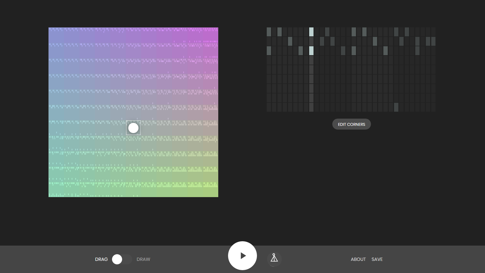

Music Generation with Magenta
Using Machine Learning in Arts
Alexandre DuBreuil
@dubreuia
Alexandre DuBreuil
Software engineer, sound designer, conference speaker and open source maintainer.
@dubreuia
Generative Music
(in 10 minutes)
Make music without being a musician
Maybe you don't know how to improvise, maybe you need help to compose.
"Why you should build silly things" - Monica Dinculescu
It is okay to make art without taking ourselves seriously. The important is to create systems that makes interaction possible.
https://www.corelogic.com.au/sites/default/files/2018-08/1200px-800px--tworobots.jpg
Helping people build generative systems
Art exhibit, generative radio, interactive art.
https://i.pinimg.com/originals/07/3e/86/073e862a13e4bacc7589f0d4eff4b873.jpg
"The weird and the strange is good" - Brian Eno
Generative systems makes tons of mistakes (also humans), but mistakes are good.
https://www.corelogic.com.au/sites/default/files/2018-08/1200px-800px--tworobots.jpg
"Generative art is an artwork partially or completely created by an autonomous system."
Machine Learning
Hand crafting the rules of a painting or the rules of a music style might be a hard task. That's why Machine Learning is so interesting in arts: it can learn complex functions.
Music generation with RNNs
 Recurrent Neural Networks (RNNs) solves two important properties for
music generation: they operate on sequences for the inputs
and outputs and they can remember past
events.
Recurrent Neural Networks (RNNs) solves two important properties for
music generation: they operate on sequences for the inputs
and outputs and they can remember past
events.
Long-term structure with LSTMs
 Most RNN uses Long Short-Term Memory (LSTM) cells, since by
themselves, RNNs are hard to train because of the problems of
vanishing and exploding gradient, making long-term dependencies
hard to learn.
Most RNN uses Long Short-Term Memory (LSTM) cells, since by
themselves, RNNs are hard to train because of the problems of
vanishing and exploding gradient, making long-term dependencies
hard to learn.
By using input, output and forget gates in the cell, LSTMs can learn mechanisms to keep or forget information as they go.
https://www.asimovinstitute.org/wp-content/uploads/2016/09/lstm.png
Latent space interpolation with VAEs
 Variational Autoencoders (VAEs) are a pair of networks where an
encoder reduces the input to a lower dimensionality (latent
space), from which a decoder tries to reproduce the
input.
Variational Autoencoders (VAEs) are a pair of networks where an
encoder reduces the input to a lower dimensionality (latent
space), from which a decoder tries to reproduce the
input.
The latent space is continuous and follows a probability distribution, meaning it is possible to sample from it. VAEs are inherently generative models: they can sample and interpolate (smoothly move in the latent space) between two points.
https://www.asimovinstitute.org/wp-content/uploads/2016/09/vae.png
Audio generation with WaveNet Autoencoders
 WaveNet is a convolutional neural network (CNN) taking raw signal
as an input and synthesizing output audio sample by sample.
WaveNet is a convolutional neural network (CNN) taking raw signal
as an input and synthesizing output audio sample by sample.
TODO check this out
The WaveNet Autoencoder present in Magenta is a Wavenet-style AE network capable of learning its own temporal embedding, resulting in a latent space from which is it possible to sample and mix elements.
magenta.tensorflow.org/assets/nsynth_05_18_17/encoder-decoder.png
Representation: MIDI
MIDI is a musical representation analogous to sheet music, where each note as a pitch, velocity, start and end time.
Working with MIDI shows the underlying structure of the music, but doesn't define the actual sound, you'll need to use instruments (numeric or analogic).

Representation: audio
Working with audio is harder because you have to handle 16000 samples per seconds (at least) and keep track of the general structure. Generating audio is more direct than MIDI.

https://upload.wikimedia.org/wikipedia/commons/c/c5/Spectrogram-19thC.png
What's in Magenta?
| Model | Network | Repr. | Encoding |
|---|---|---|---|
| DrumsRNN | LSTM | MIDI | polyphonic-ish |
| MelodyRNN | LSTM | MIDI | monophonic |
| PolyphonyRNN | LSTM | MIDI | polyphonic |
| PerformanceRNN | LSTM | MIDI | polyphonic, groove |
| MusicVAE | VAE | MIDI | multiple |
| NSynth | Wavenet AE | Audio | - |
| GANSynth | GAN | Audio | - |
Live code: Generate a track
(in 20 minutes)
STEP 1: make everything sound like a cat.
We'll use NSynth to mix cat sounds with other sounds.
STEP 1: The sounds


STEP 1: Entry point
See "code/nsynth.py" and method app in this repo.
def app(unused_argv):
encoding1, encoding2 = encode([FLAGS.wav1, FLAGS.wav2],
sample_length=FLAGS.sample_length,
sample_rate=FLAGS.sample_rate,
checkpoint=FLAGS.checkpoint)
encoding_mix = mix(encoding1, encoding2)
synthesize(encoding_mix, checkpoint=FLAGS.checkpoint)
STEP 1: Encode
See "code/nsynth.py" and method encode in this repo.
def encode(paths: List[str],
sample_length: int = 16000,
sample_rate: int = 16000,
checkpoint: str = "checkpoints/wavenet-ckpt/model.ckpt-200000") \
-> np.ndarray:
audios = []
for path in paths:
audio = utils.load_audio(path,
sample_length=sample_length,
sr=sample_rate)
audios.append(audio)
audios = np.array(audios)
encodings = fastgen.encode(audios, checkpoint, sample_length)
return encodings
STEP 1: Mix
See "code/nsynth.py" and method mix in this repo.
def mix(encoding1: np.ndarray,
encoding2: np.ndarray) \
-> np.ndarray:
encoding_mix = (encoding1 + encoding2) / 2.0
return encoding_mix
STEP 1: Synthesize
See "code/nsynth.py" and method synthesize in this repo.
def synthesize(encoding_mix: np.ndarray,
checkpoint: str = "checkpoints/wavenet-ckpt/model.ckpt-200000"):
os.makedirs(os.path.join("output", "synth"), exist_ok=True)
date_and_time = time.strftime("%Y-%m-%d_%H%M%S")
output = os.path.join("output", "synth", f"{date_and_time}.wav")
encoding_mix = np.array([encoding_mix])
fastgen.synthesize(encoding_mix,
checkpoint_path=checkpoint,
save_paths=[output])
STEP 1: GANSynth
As shown, the NSynth instrument is nice, but really slow for the audio synthesis. You should use GANSynth.
STEP 1: The results
TODO describe
STEP 2: sequence the cats
We'll use DrumsRNN and MelodyRNN to generate MIDI to play the samples.
http://wallpaperstock.net/cats-line-up_wallpapers_13044_1920x1200.jpg
STEP 2: Reset
See "code/sequences.py" and method reset in this repo.
def reset(loop_start_time: float,
loop_end_time: float,
seconds_per_loop: float):
sequence = music_pb2.NoteSequence()
sequence = loop(sequence,
loop_start_time,
loop_end_time,
seconds_per_loop)
return sequence
STEP 2: Loop
See "code/sequences.py" and method loop in this repo.
def loop(sequence: NoteSequence,
loop_start_time: float,
loop_end_time: float,
seconds_per_loop: float):
sequence = ss.trim_note_sequence(sequence,
loop_start_time,
loop_end_time)
sequence = ss.shift_sequence_times(sequence,
seconds_per_loop)
return sequence
STEP 2: Generate
See "code/sequences.py" and method generate in this repo.
def generate(sequence: NoteSequence,
name: str,
bundle_filename: str,
config_name: str,
generation_start_time: float,
generation_end_time: float):
generator_options = generator_pb2.GeneratorOptions()
generator_options.args['temperature'].float_value = 1
generator_options.generate_sections.add(
start_time=generation_start_time,
end_time=generation_end_time)
sequence_generator = get_sequence_generator(name,
bundle_filename,
config_name)
sequence = sequence_generator.generate(sequence,
generator_options)
sequence = ss.trim_note_sequence(sequence,
generation_start_time,
generation_end_time)
return sequence
STEP 2: Sequence generator
See "code/sequences.py" and method
get_sequence_generator in this repo.
def get_sequence_generator(name: str,
bundle_filename: str,
config_name: str):
if name == "drums":
generator = drums_rnn_sequence_generator
elif name == "melody":
generator = melody_rnn_sequence_generator
else:
raise Exception(f"Unknown sequence generator {name}")
mm.notebook_utils.download_bundle(bundle_filename, "bundles")
bundle = mm.sequence_generator_bundle.read_bundle_file(
os.path.join("bundles", bundle_filename))
generator_map = generator.get_generator_map()
sequence_generator = generator_map[config_name](
checkpoint=None, bundle=bundle)
sequence_generator.initialize()
return sequence_generator
Wrapping up
This generative music demo helped us improvise and compose around an idea: a track composed of a percussion, a melody, and a cat.
Was it perfect? No, we had little happy accidents.

{kind=link}
{kind=link}
{kind=link}
{kind=link}
{kind=link}
{kind=link}
{kind=link}
{kind=link}
{kind=link}
{kind=link}
{kind=link}
Interaction with the outside world
(in 5 minutes)
Python to everything using MIDI
Magenta can send MIDI, which is understood by basically everything that makes sound: DAWs (like Ableton Live), software synthesizers (like fluidsynth), hardware synthesizers (though USB or MIDI cable), etc.
Magenta in the browser with Magenta.js
You can use Magenta and most of its models in the browser, using Magenta.js (which in turns uses Tensorflow.js).
Melody Mixer

Beat Blender

Neural Drum Machine

TODO harp synth
Easy peasy
<html>
<head>
...
<!-- You need to bring your own Tone.js for the player, and tfjs for the model -->
<script src="https://cdnjs.cloudflare.com/ajax/libs/tone/13.8.21/Tone.js"></script>
<script src="https://cdnjs.cloudflare.com/ajax/libs/tensorflow/1.2.8/tf.min.js"></script>
<!-- Core library, since we're going to use a player -->
<script src="https://cdn.jsdelivr.net/npm/@magenta/music@^1.0.0/es6/core.js"></script>
<!--Model we want to use -->
<script src="https://cdn.jsdelivr.net/npm/@magenta/music@^1.0.0/es6/music_vae.js"></script>
</head>
<script>
// Each bundle exports a global object with the name of the bundle.
const player = new core.Player();
//...
const mvae = new music_vae.MusicVAE('https://storage.googleapis.com/magentadata/js/checkpoints/music_vae/mel_2bar_small');
mvae.initialize().then(() => {
//...
});
</script>
</html>
Magenta in your DAW with Magenta Studio
Using Magenta.js and Max4Live (MaxMSP) process, Magenta Studio can be used directly in Ableton Live.
https://magenta.tensorflow.org/studio/assets/studio/hero.mp4
Training
(in 5 minutes)
Why?
TODO if you want a specific style
Datasets: LAKHS (MIDI)
A good place to start is the LAKHS dataset, a 180,000 MIDI files dataset, matched with the Million Song Dataset (metadata).
Datasets: NSynth (audio)
A large-scale and high-quality dataset of annotated musical notes. Training audio is ressource intensive, but can be acheived using GANSynth.
Building the dataset
From MIDI, ABCNotation, MusicXML files to NoteSequence.
convert_dir_to_note_sequences \
--input_dir="jazz_dir_with_midi_files" \
--output_file="/tmp/notesequences.tfrecord" \
--recursive
Create SequenceExamples
drums_rnn_dataset \
--config="drum_kit" \
--input="/tmp/notesequences.tfrecord" \
--output_dir="/tmp/drums_rnn/sequence_examples" \
--eval_ratio=0.10
Train and evaluate the model
drum_rnn_train \
--config="drum_kit" \
--run_dir="/tmp/drums_rnn/logdir/run1" \
--sequence_example_file="/tmp/drums_rnn/sequence_examples/training_performances.tfrecord"
Tensorboard
Then go to http://localhost:6006 to view the TensorBoard dashboard.
tensorboard --logdir=/tmp/drums_rnn/logdir
Closing
Dreambank
- TODO
Book
- TODO